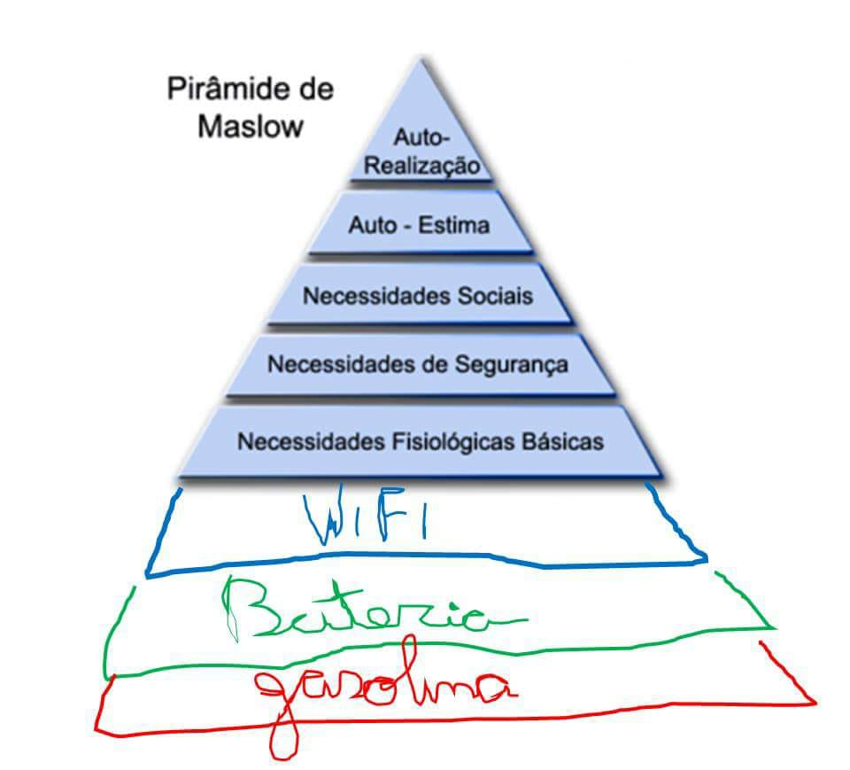
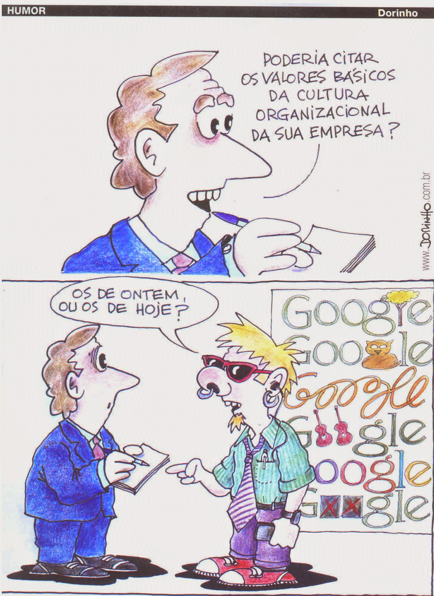

Respondendo às questões do texto Sons da Floresta, conceitos básicos de Marketing
Sons da Floresta
Respondendo à questão "O que se quer dizer “Ouvir o Inaudível”", foi impossível não me lembrar do artigo que lemos na matéria Engenharia de Requisitos no ano passado, sobre a Comunicação Não Violenta. Este artigo defende a hipótese de que, para que a comunicação entre os pares de uma organização aconteça da forma mais saudável e produtiva possível, ela deve sempre acontecer considerando 4 pontos:
- Observação: não deve haver julgamentos e emissão de opiniões.
- Sentimento: expor o que se sente sobre aquilo que está em discussão.
- Necessidades: reconhecer se há ligação entre este sentimento e um dos objetivos da organização.
- Pedido: deve ser feito de forma clara e sutil, sem qualquer impressão de ordem da parte do emissor.
Acrescentando um ponto de vista à explicação da professora, respondendo à questão "Como interpretar este texto no contexto da sua área", digo que convivo diariamente com estes conceitos à prova ao lidar com meus pares. Na área do desenvolvimento de software, quando a organização está em dia com as técnicas de gerência de projetos, nós como programadores e membros de equipes temos o dever de revisar e opinar o trabalho criativo dos outros. E isso pode gerar bastante estresse e aberturas para especulações fundadas em impressões pessoais. Um profissional que trabalha sob essas condições deve sempre considerar os objetivos em comum com seus pares, além de exercer a empatia de forma a separar o que é ideia do que é pessoa. Ao passo que a equipe evolui, este tipo de atividade se torna cada vez mais interessante, produtivo e saudável. Só é mesmo necessária a resistência para que nenhum dos contrapontos suba à cabeça.
Conceitos de Marketing
Um exemplo satírico do marketing orientado ao produto:
Já neste outro vídeo, podemos perceber as características do marketing orientado à venda:
Conceitos Centrais de Marketing
Necessidades
A Pirâmide de Maslow, edição pós-moderna: 
Cultura
